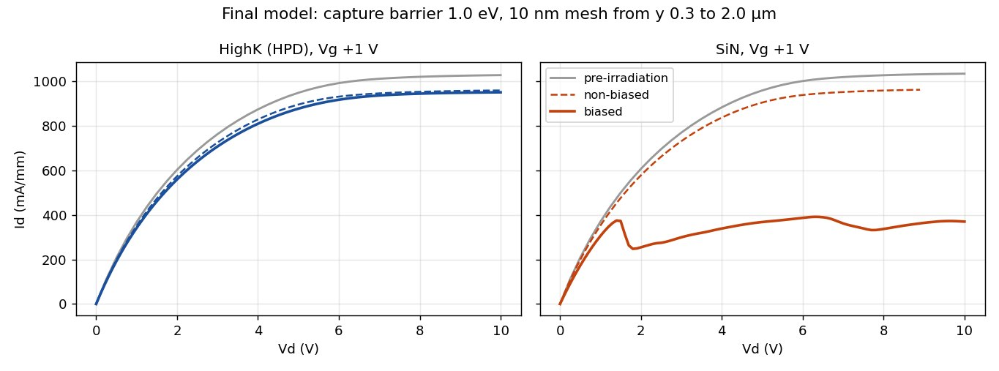
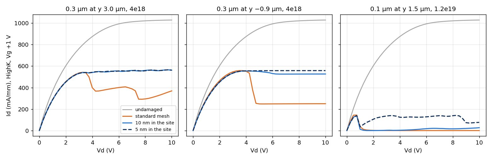
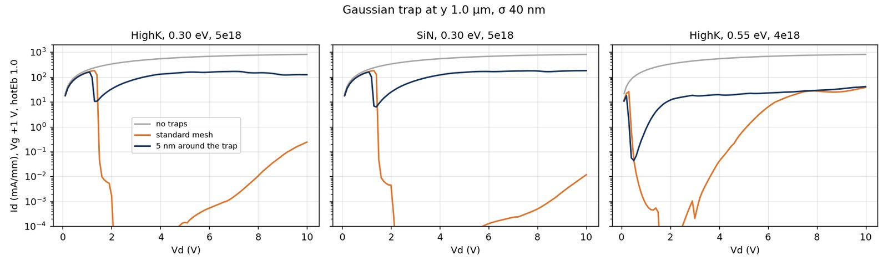
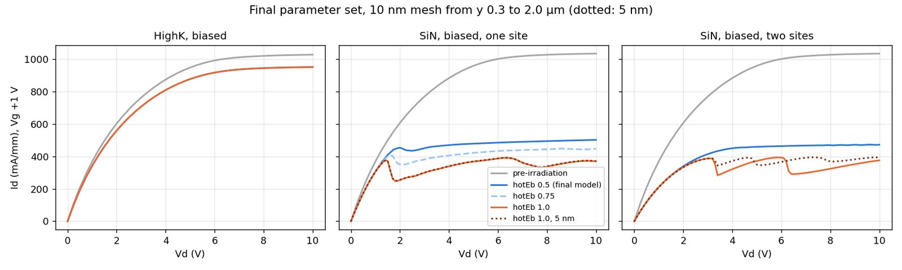
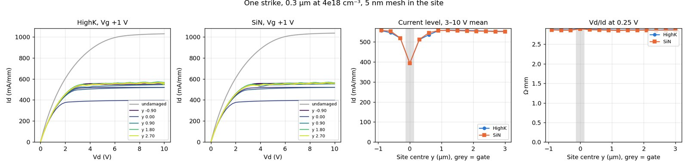
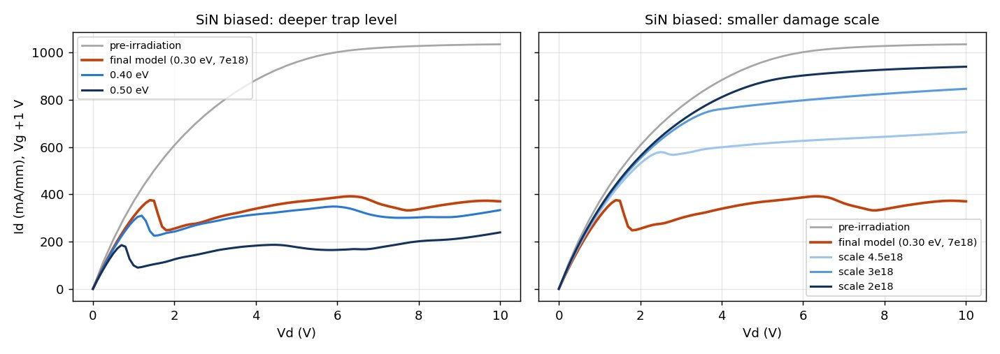

A week of damage maps, mesh checks and new levers. The biggest change: the abrupt steps the model used to show were mostly the mesh. The final model now uses a stronger capture barrier on a fine mesh, and gives one real SiN collapse while HighK stays flat.
| Setting | Until Nov 11 | From Nov 11 |
|---|---|---|
| Hot-electron capture barrier | 0.5 eV | 1.0 eV |
| Mesh where the damage sits | 25–50 nm | 10 nm, y 0.3–2.0 µm |
| Hand-placed second SiN site | yes, y 1.0–1.6 µm | dropped |
| Stress bias for the damage | 17 V (solver limit) | 17 V, set explicitly |
| SiN biased Id–Vd at Vg +1 | steps near 4.5 and 5.8 V | one drop near 1.7 V |
| SiN biased gm | −18% | −6% |
| HighK biased, non-biased devices | no collapse | no collapse (unchanged) |

The old steps disappeared on a fine mesh, and at the old 0.5 eV barrier nothing collapses on a fine mesh at all. At 1.0 eV the damage the stress field puts under the SiN gate overhang gives a real, mesh-converged collapse; HighK and the non-biased devices don't change.
Still not reproduced: the measured second step, SiN staying down after the drop, and an onset that moves later at higher Vg.
Rad model merged into main; regression passes exactly. New levers for placing damage by hand. Literature review: nothing near our fluence of 1e7 cm⁻². First position map shows steps, which looked like the measured R33 curves.
Mesh check: those steps were the mesh, and so was "the source side is worst". Ron candidates, back-gating, emission levers, multi-strike runs. Strike transient stopped near 1.4 ns after a bad step.
Refined position map at 5 nm. Smooth Gaussian traps at a 1.0 eV barrier collapse on any mesh. The SiN vs HighK contrast survives a fine mesh. Emission bug found and fixed.
Final set at 1.0 eV: SiN collapses, HighK doesn't. The 5 nm check confirms the one-site drop; the second site's step doesn't converge.
Final model moved to 1.0 eV and a fine mesh (Ian). Explainer, Oct 29 deck and work log revised. Gaussian damage lever added; first exploration batch.
Deeper trap levels make SiN stay down but collapse earlier; a smaller damage scale removes the collapse. Two more batches running.

A sharp-edged damage site on 25–50 nm cells fills about one cell at a time, so each cell shows up as a step. At 10 and 5 nm a 0.3 µm site at 4e18 has no step bigger than 8 mA/mm, and the two meshes agree.
This removed the steps from the first position map, the final model's two SiN steps, and the claim that a source-side strike hurts most. Vth, Ron and gm results were unaffected.

A smooth (Gaussian) trap at a 1.0 eV capture barrier collapses on 5 and 2.5 nm alike: 157 → 10 mA/mm near 1.2 V at 0.30 eV, and about 300× at 0.3–0.4 V at 0.55 eV, followed by a creep.


Several mechanisms reach about +0.2 V in the model. Vth alone can't tell them apart; Ron and gm can.
| Mechanism | Setting | ΔVth | Ron | gm |
|---|---|---|---|---|
| Schottky barrier | +0.2 eV | +0.20 V | +1% | 0% |
| Polarization under the gate | −5% | +0.22 V | +1% | +1% |
| AlGaN acceptors under the gate (model) | 5e17 | +0.17 V | 0% | 0% |
| Polarization, whole device | −5% | +0.22 V | +6% | −2% |
| Surface charge | −1.2e12 cm⁻² | +0.17 V | +15% | −4% |
| Buffer acceptors (back-gating) | 1e17, filled | +0.11 V | +3% | −2% |
| Dielectric charge near the gate | 1e18 | +0.03 V | +4% | −3% |

| Running now | Question | Status |
|---|---|---|
| Smooth second SiN strike (y 1.5, 2.4 µm) | A converged second step? | running |
| Damage scale 5e18–6e18 | Later onset just above threshold? | running |
| Deeper level with a smaller scale | Later onset that stays down? | running |
| Cooler hot electrons (hotTau) | Later onset? | running |
| Stress at the real 28 V | Damage in two regions, two steps? | running |
| Final SiN at Vg −1, 0, +0.5; Ron(Vg) | Onset vs Vg; biased vs non-biased Ron | running |
| Earlier claim | Now |
|---|---|
| One damaged section gives abrupt steps like R33 | Mesh artifact at 0.3 µm and 4e18 |
| The final SiN curve steps at 4.5 and 5.8 V | Mesh artifact; one real drop near 1.7 V at the new barrier |
| No steps survive a fine mesh | Only true at the 0.5 eV barrier; smooth traps at 1.0 eV collapse for real |
| Buffer acceptors don't shift Vth | The first runs left them empty; filled ones do, but need a lot of charge |
| A deeper trap level reduces the Vth shift | It increases it, to about +0.25 V |